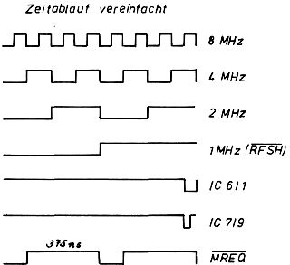

Nascom Journal |
Oktober 1981 · Ausgabe 10 |
weist auf eine Datenübertragung in zwei Richtungen (bidirektional auf getrennten Leitungen) hin, ein „C“ auf nur eine Datenrichtung mit Rückmeldung vom Drucker auf der zweiten Richtung (Signalverlauf analog der Spezifikationen von Centronics), ein „U“ bedeutet, daß die Schnittstelle für unidirektionalen Datenverkehr ausgelegt ist. Die Abkürzung M1.1 steht für „mechanisch einfache Schnittstelle“, Version 1.1. Die Schnittstelle 8 CM 1,1 (TTL-Pegel) ist kompatibel mit dem Centronics-Interface, die Schnittstelle 8BM 1.1 (TTL-Pegel) paßt zur V.24/RS232-Definition (Parity), Die beiden Schnittstellen können ineinander umgewandelt werden
Neben Datenleitungen (8 oder 16) verfügen die PCC-Schnittstellen über eine Anzahl von Signalleitungen: AI oder SS (Hardware Alarm), CAck (Acknowledge bestätigt die Übernahme der Daten in den Drucker), CBusy (Busy meldet, daß der Drucker beschäftigt ist und keine Daten in den Eingangspuffer übernehmen kann), CH oder Change (Hilfssignal zur Anpassung der Schnittstelle PCC-8CM an PCC-8BM, FI oder Fault (allgemeine Fehlermeldung), ME oder Papier End (Material zu Ende, zum Beispiel Papier, Farbband, Tinte), RS (Drucker wurde rückgesetzt), Sel oder Select (Drucker ist betriebsbereit und angewählt), TTL-0, TTL-1 (die sogenannten Signale ermöglichen zusammen mit dem Signal CH eine Kompatibilität zwischen hard- (Einzelleitung) beziehungsweise softwaremäßig (ASCII-Zeichen) erzeugten Rückmeldungen vom intelligenten Peripheriegerät)
Der folgende Beitrag wurde vom Verfasser noch etwas ausführlicher überarbeitet und mit Anmerkungen zur Anwendung auf Nascom1 versehen, Leider ist die Cassette auf dem Postweg verlorengegangen. Falls Sie Fragen haben oder Hinweise zur Anpassung an Nascom1 benötigen, schreiben Sie uns. Herr Pohl ist gerne bereit, noch weitere Informationen zu liefern. (Red.).
Man kann mit Hilfe von 8 TTL-ICs und zwei Potis zum vorhandenen Videoteil eine hochauflösende Graphik mit 256 x 256 Bildpunkten bauen, wenn man mindestens 8K RAM besitzt.
Durch das VBLANK-Signal wird der Bus vom Prozessor angefordert. Wenn der Prozessor den Bus mit BUSAK freigibt, werden die Zeilen und Spaltenzähler des Videoteils auch als Adresszähler verwendet. Dadurch werden mit Hilfe des RD- und MREQ-Signals die Graphik-Bytes auf den Datenbus gelesen. Mit dem Schieberegister (IC 6) wird daraus das Bildsignal erzeugt. Diese wird mit dem Bild- und Synchronisationssignal vom Videoteil gemischt und kann so direkt in meinen Fernseher eingespeist werden. Damit sich die Inhalte der dynamischen RAMs nicht verändern, wird bei jeder Adresse noch ein Refresh-Lesen durchgeführt. Außerdem wird das Ein- und Ausschalten durch zwei Flip-Flops gesteuert. (74LS74 hat bei mir nicht funktioniert) .
Um alle 65536 Bildpunkte abbilden zu können, muß im Videoteil bei IC 44 Pin 8 herausgebogen werden. Dadurch wird jedes Zeichen mit seiner vollen gespeicherten Höhe von 16 Punkten abgebildet, und nicht nur mit 12 oder 14. Außerdem verringert sich die Bildfrequenz und das Bild wird etwas größer.
Da die Graphik den Prozessor dauernd unterbricht, ist es nicht möglich, bei eingeschaltener Graphik Programme laufen zu lassen, die nicht unterbrochen werden dürfen (z.B. Cassette lesen). Andere Programme werden nur langsamer abgearbeitet.
| Seite 22 von 28 |
|---|